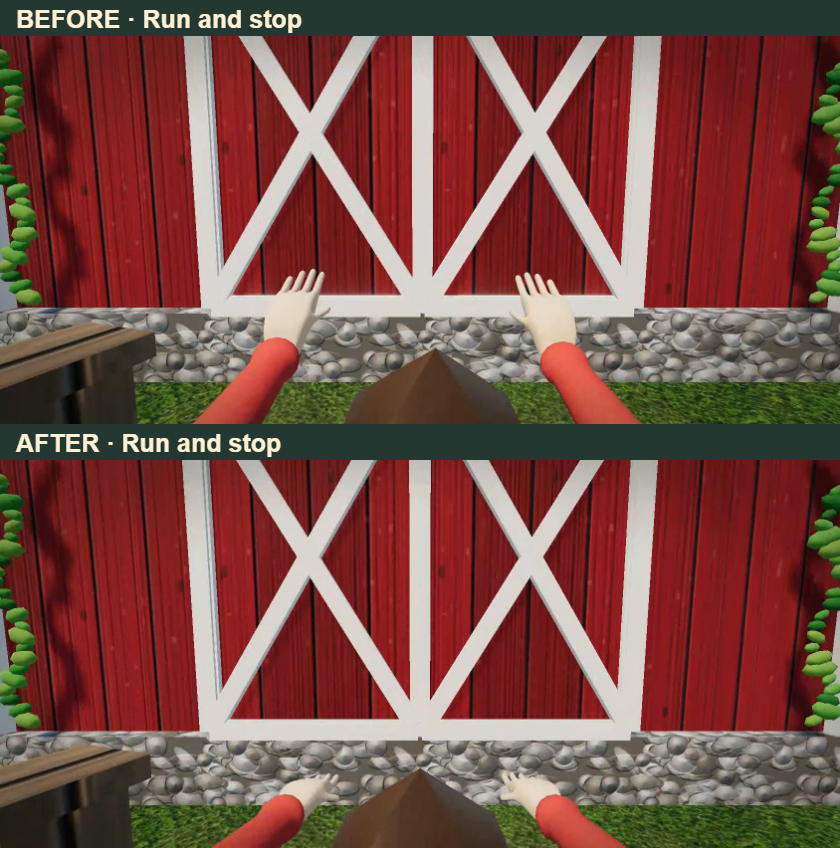

Player rest and movement
Before above, after below. Eight seconds: resting arms, walking and stopping, then running and stopping.
Download clip
Isolated synthetic preview. Same character asset and controls. Appearance review pending; production is unchanged.
Canvas footage excludes the game HUD and audio. These are PC renders at mobile dimensions, not physical-phone tests.

Test report: performance acceptance remains open